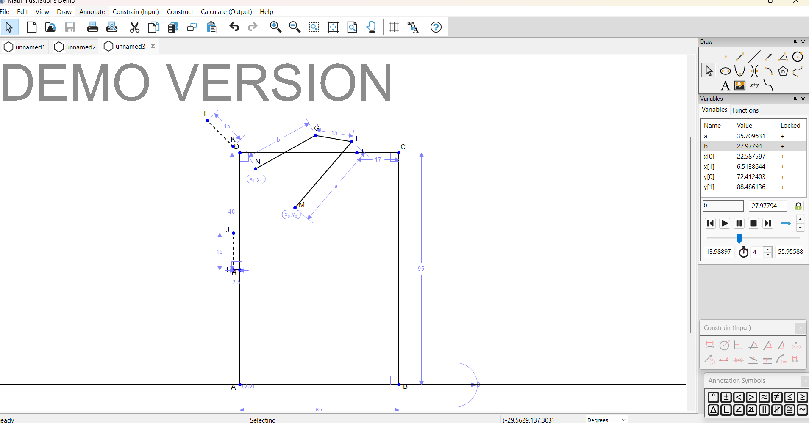
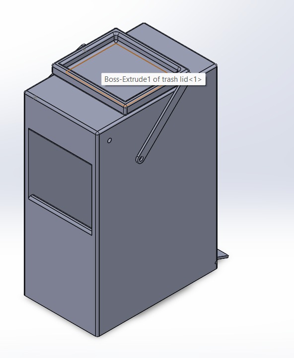
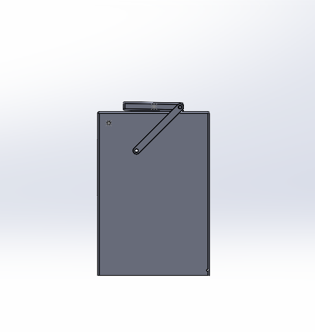
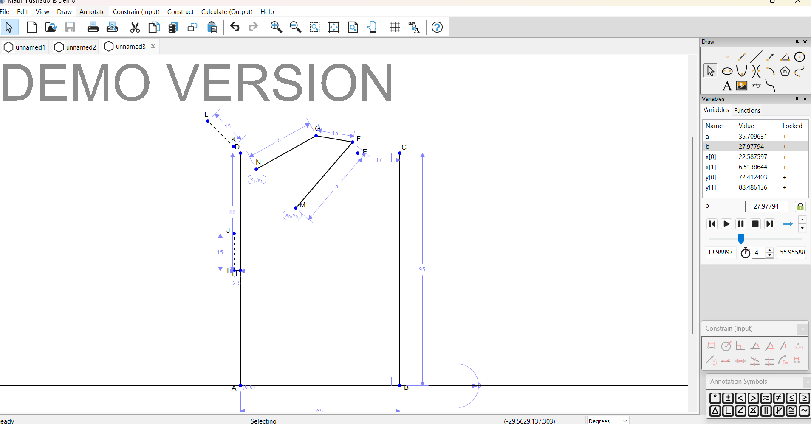
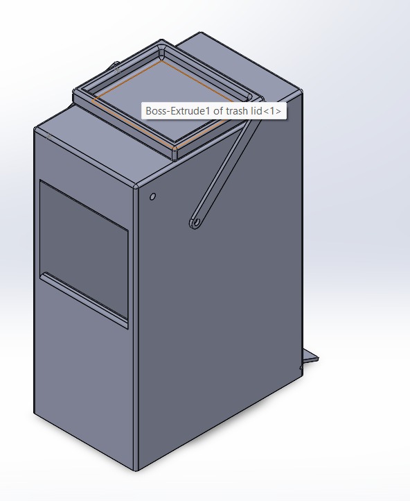
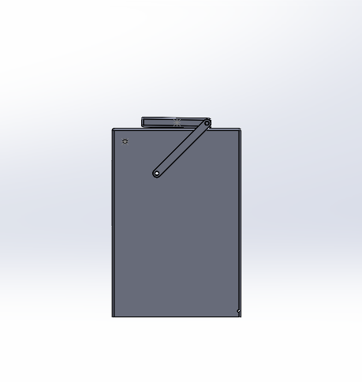
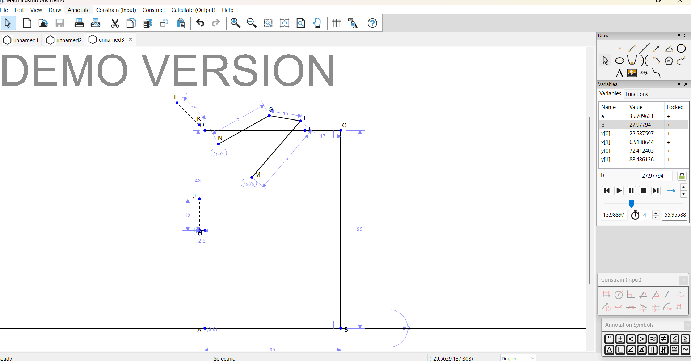
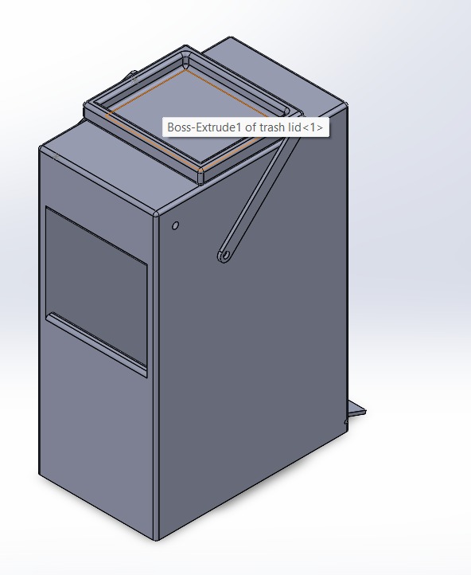
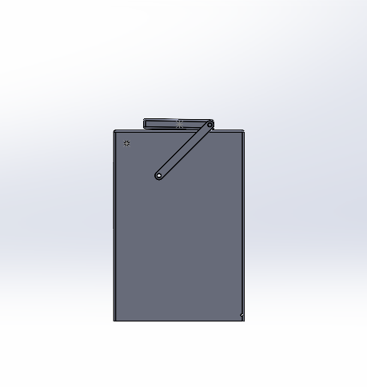

This project focused on designing and simulating a four-bar linkage mechanism for a trash can lid. The goal was to create a smooth, efficient, and ergonomic opening and closing motion that allowed the user to throw away their trash without having to look inside the trash can.
In order to implement this design, I first used Math Illustrations to determine the layout necessary for the lid path. Then, using SolidWorks, I developed a functional design. Finally, I used SolidWorks' motion analysis software to test and optimize the design.


